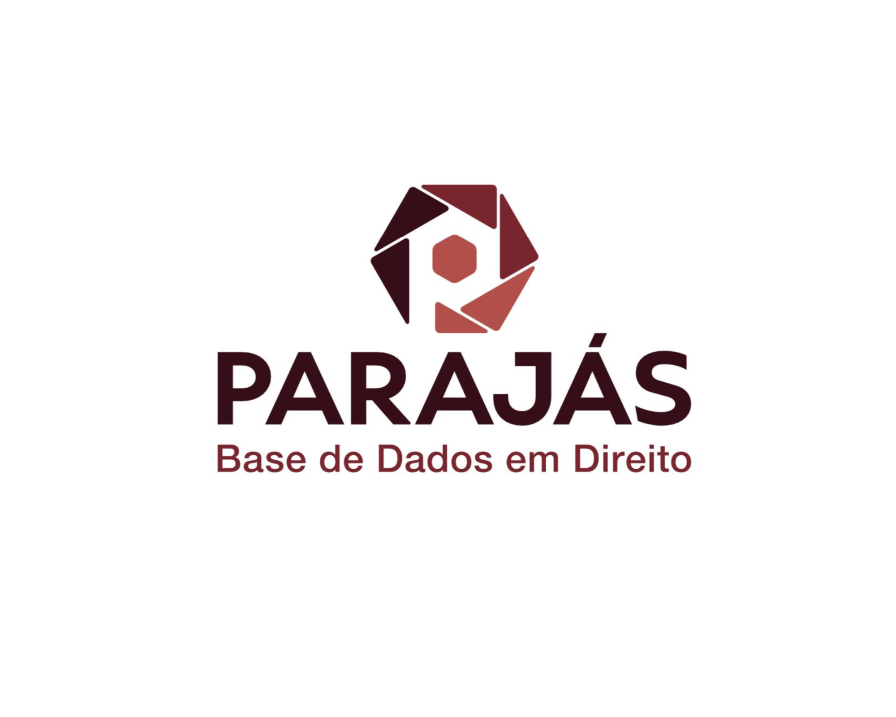
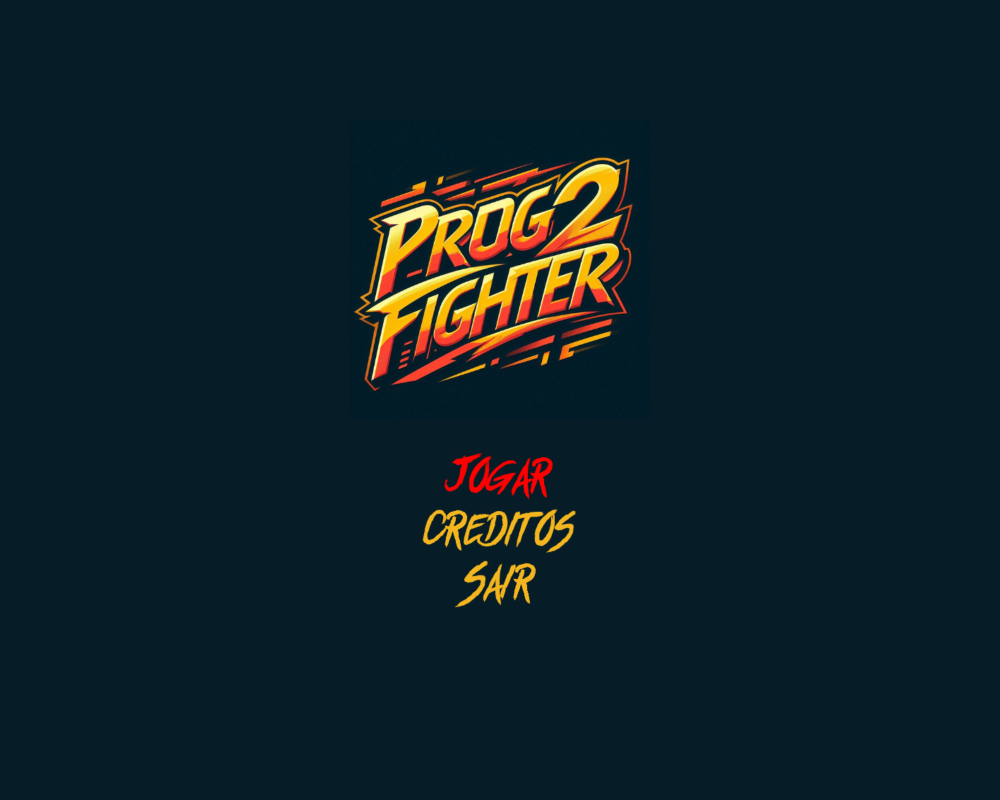
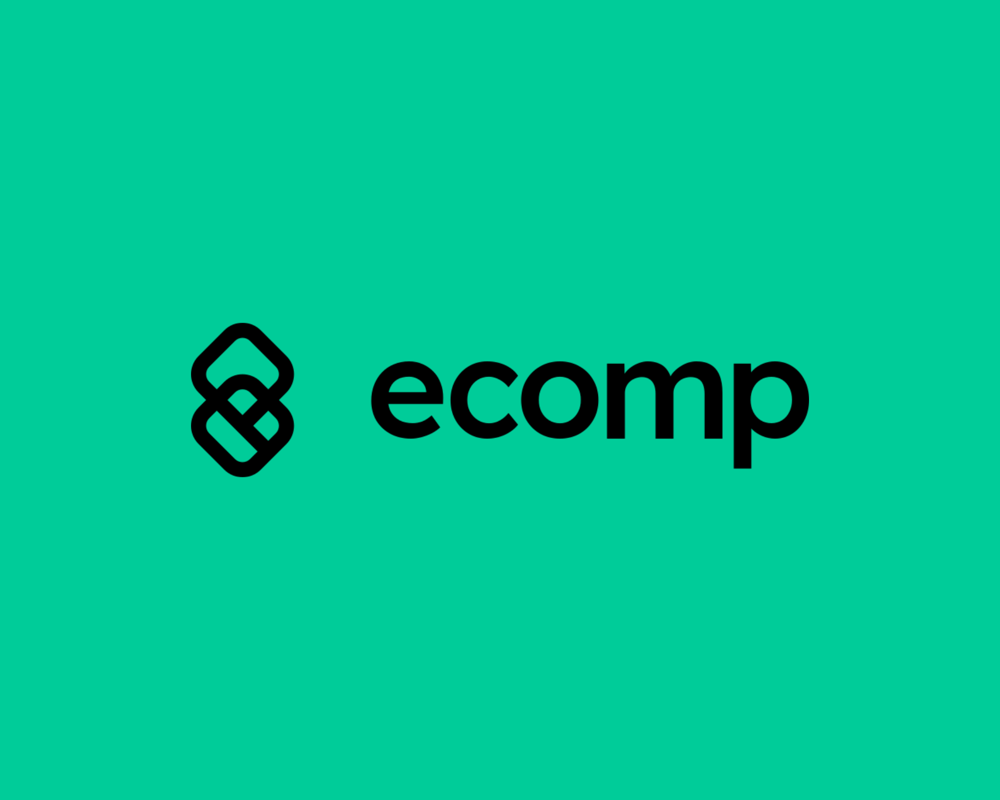

Desenvolvimento da PARAJÁS
Base de Dados em Direito reunindo publicações de acesso aberto do domínio jurídico brasileiro. Publicado em julho de 2024 e apresentado no 9º EBBC, em Brasília.
Saiba mais →Estudante de Ciência da Computação na Universidade Federal do Paraná (UFPR). Pesquisador de Iniciação Científica com bolsa CNPq, focado em Ciência Aberta e Direito. Assessor de Negócios e Product Owner na Empresa Júnior de Computação (ECOMP).
Destaques
Sobre
Tenho paixão por tecnologia, inovação e desenvolvimento de produtos que possam impactar positivamente a qualidade de vida das pessoas. Atuo na interseção entre pesquisa acadêmica, gestão de projetos e desenvolvimento de software.
Como pesquisador de Iniciação Científica com bolsa CNPq, trabalho com Ciência Aberta e Direito. Como Assessor de Negócios e Product Owner na ECOMP, ajudo a transformar ideias em soluções inovadoras.
Habilidades
Liderei o backend do projeto de pesquisa, aprimorando gestão de equipe e resolução de problemas. Organizei reuniões regulares para revisar progresso e ajustar o planejamento, fortalecendo tomada de decisão e organização.
Como Product Owner na ECOMP, gerencio projetos com metodologias ágeis: priorização de tarefas, organização de sprints e monitoramento de KPIs, garantindo entrega eficiente e qualidade final.
Experiência em backend com Django (Python). Conhecimento em C, Pascal e Java (POO). Foco em boas práticas de programação e trabalho colaborativo em equipes.
Projetos

Base de Dados em Direito reunindo publicações de acesso aberto do domínio jurídico brasileiro. Publicado em julho de 2024 e apresentado no 9º EBBC, em Brasília.
Saiba mais →
Jogo criado com a biblioteca Allegro5 em C/C++, aplicando conceitos de programação orientada a eventos: gráficos, entrada do usuário, sons e otimização de desempenho.
Ver código →Grupo de pesquisa da UFPR integrando gestão da informação, administração pública e estudos jurídicos. Minha linha: gestão da informação científica no contexto da ciência aberta.
Saiba mais →
Desde abril de 2024: capacitações em backend Laravel, formação como Product Owner, briefings com clientes, documentos de features e cultura organizacional com OKRs.
Conheça a ECOMP →Contato
Tem um projeto, oportunidade ou só quer trocar uma ideia? Me chama — respondo por email ou redes sociais.